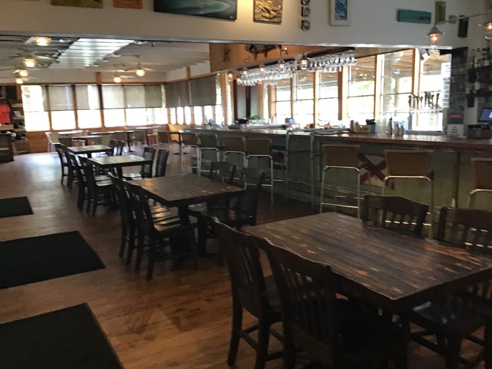
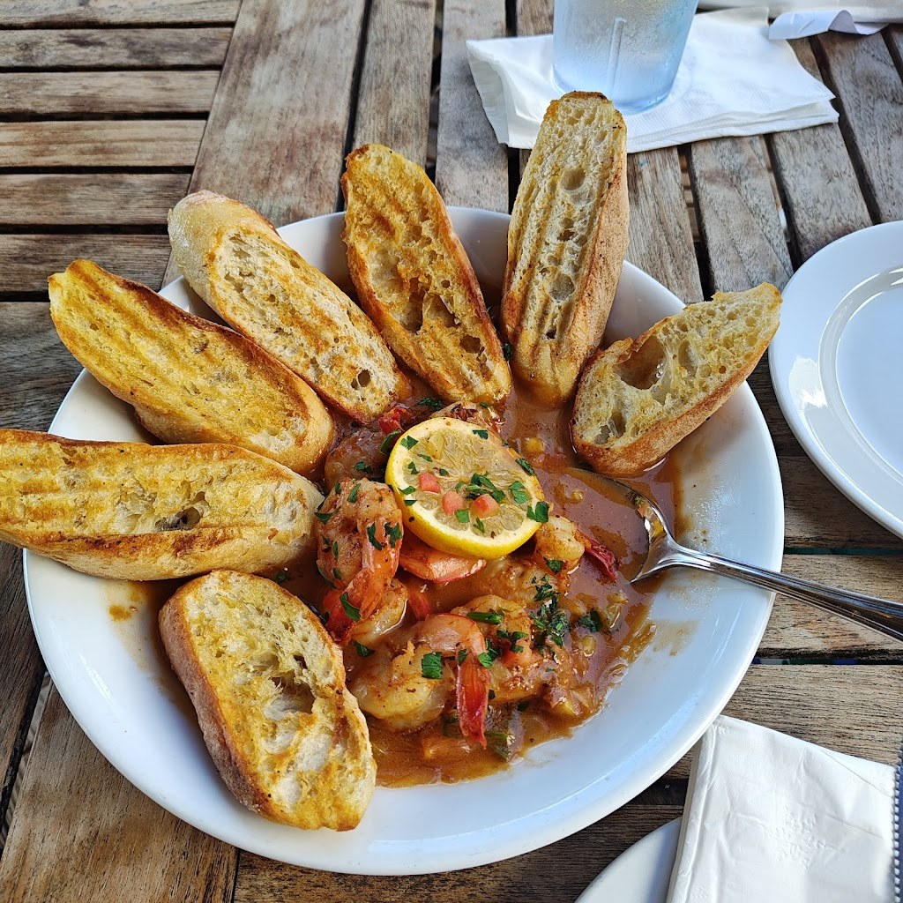

Visit Sunset Pointe at Fly Creek Marina
Waterfront seafood and American dining at Fly Creek Marina, made from scratch.
Address: 831 N Section St, Fairhope, AL 36532
Hours: Sun to Thu 11am to 9pm, Fri and Sat 11am to 9:30pm
Phone: (251) 990-7766
Find us: 831 N Section Street, Fairhope, AL 36532, at Fly Creek Marina. Call (251) 990-7766 for reservations.
Gallery


Photos of Sunset Pointe: the patio, the dining room, and a shrimp dish.
Contact
Sunset Pointe at Fly Creek Marina serves Fairhope, AL. Questions? Call (251) 990-7766.